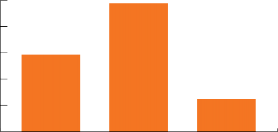
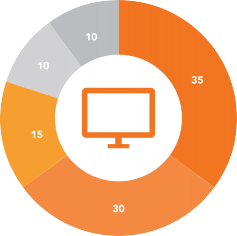
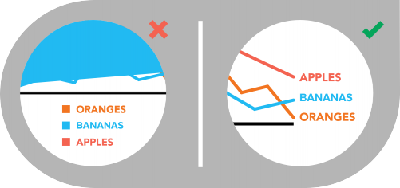
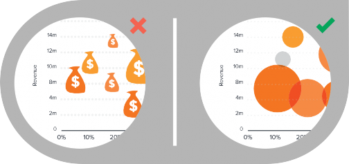
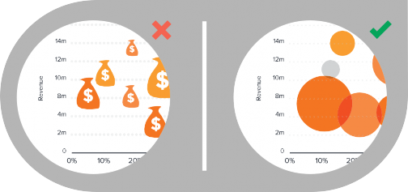
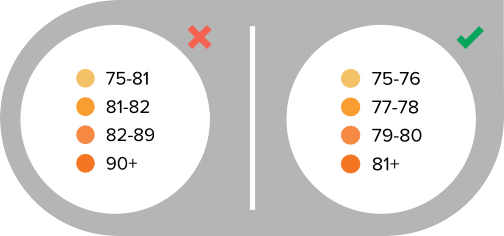

+
INTRO 1
FINDING THE STORY IN 2
YOUR DATA
KNOW YOUR DATA 3
GUIDE TO CHART TYPES 5
Bar Chart 6
Pie Chart 9
Line Chart 11
Area Chart 13
Scatter Plot 15
Bubble Chart 17
Heat Map 19
10 DATA DESIGN 21
DO’S AND DONT’S
Your data is only as good as your ability to understand and communicate it, which is why choosing the right visualization is essential.
If your data is misrepresented or presented ineffectively, key insights and understanding are lost, which hurts both your message and your reputation. The good news is that you don’t need a PhD in statistics to crack the data visualization code. This guide will walk you through the most common charts and visualizations, help you choose the right presentation for your data, and give you practical design tips and tricks to make sure you avoid rookie mistakes. It’s everything you need to help your data make a big impact.
What’s the ideal distance between columns in a bar chart?
You’re about to find out.
1
Information can be visualized in a number of ways, each of which can provide a specific insight. When you start to work with your data, it’s important to identify and understand the story you are trying to tell and the relationship you are looking to show. Knowing this information will help you select the proper visualization to best deliver your message.
When analyzing data, search for patterns or interesting insights that can be a good starting place for finding your story, such as:
TRENDS CORRELATIONS OUTLIERS
Example:
Ice cream sales over time
Example:
Ice cream sales vs. temperature
Example:
Ice cream sales in an
unusual region 2
DATA TYPES


QUANTITATIVE
Data that can be counted or measured; all values are numerical.


DISCRETE
Numerical data that has a finite number of possible values. Example: Number of employees in the office.


CONTINUOUS
Data that is measured and has a value within a range. Example: Rainfall in a year.
CATEGORICAL
Data that can be sorted according to group or category. Example: Types of products sold.
Before understanding visualizations, you must understand the types of data that can be visualized and their relationships to each other. Here are some of the most common you are likely to encounter.
DATA RELATIONSHIPS
NOMINAL COMPARISON
This is a simple comparison of the quantitative values of subcategories. Example: Number of visitors to various websites.
DEVIATION
This examines how data points relate to each other, particularly how far any given data point differs from the mean. Example: Amusement park tickets sold on a rainy day vs. a regular day.
TIME-SERIES
This tracks changes in values of a consistent metric over time. Example: Monthly sales.
DISTRIBUTION

This shows data distribution, often around a
central value. Example: Heights of players on a basketball team.
CORRELATION
This is data with two or more variables that may demonstrate a positive or negative correlation to each other. Example: Salaries according to education level.
PART-TO-WHOLE RELATIONSHIPS
This shows a subset of data compared to the larger whole. Example: Percentage of customers purchasing specific products.
Now that you’ve got a handle on the most common data types and relationships you’ll most likely have to work with, let’s dive into the different ways you can visualize that data to get your point across.
4
RANKING
This shows how two or more values compare to each other in relative magnitude. Example: Historic weather patterns, ranked from the hottest months to the coldest.
GUIDE TO CHART TYPES

In this section, we’ll cover the uses, variations, and best practices for some of the most common data visualizations:
BAR CHART
PIE CHART
LINE CHART

AREA CHART SCATTER PLOT
BUBBLE CHART HEAT MAP
Bar charts are very versatile. They are best used to show change over time, compare different categories, or compare parts of a whole.

VARIATIONS OF BAR CHARTS

PAGE VIEWS, BY MONTH CONTENT PUBLISHED, BY CATEGORY

VERTICAL (COLUMN CHART)
Best used for chronological data (time-series should always run left to right), or when visualizing negative values below the x-axis.
HORIZONTAL
Best used for data with long category labels.

VARIATIONS OF BAR CHARTS (CONT.)

MONTHLY TRAFFIC, BY SOURCE PERCENTAGE OF CONTENT PUBLISHED, BY MONTH


STACKED
Best used when there is a need to compare multiple part-to-whole relationships. These can use discrete or continuous data, oriented either vertically or horizontally.
100% STACKED
Best used when the total value of each category is unimportant and percentage distribution of subcategories is the primary message.


DESIGN BEST PRACTICES
USE HORIZONTAL LABELS
Avoid steep diagonal or vertical type, as it can be difficult to read.
SPACE BARS APPROPRIATELY
Space between bars should be ½ bar width.
START THE Y-AXIS VALUE AT 0
Starting at a value above zero truncates the bars and doesn’t accurately reflect the full value.
USE CONSISTENT COLORS
Use one color for bar charts. You may use an accent color to highlight a significant data point.
ORDER DATA APPROPRIATELY
Order categories alphabetically, sequentially, or by value.
PIE CHART
Pie charts are best used for making part-to-whole comparisons with discrete or continuous data. They are most impactful with a small data set.

VARIATIONS OF PIE CHARTS
STANDARD
Used to show part-to-whole relationships.

DONUT
Stylistic variation that enables the inclusion of a total value or design element in the center.
THE CASE AGAINST THE PIE CHART
The pie chart is one of the most popular
chart types. However, some critics, such as data visualization expert Stephen Few are not fans. They argue that we are really only able to gauge the size of pie slices
if they are in familiar percentages (25%, 50%, 75%, 100%) and positions, because they are common angles. We interpret other angles inconsistently, making it difficult to compare relative sizes and therefore less effective.
9
VISUALIZE NO MORE THAN 5 CATEGORIES PER CHART
It is difficult to differentiate between small values; depicting too many slices decreases the impact of the visualization. If needed, you can group smaller values into an “other” or “miscellaneous” category, but make sure it does not hide interesting or significant information.
DON’T USE MULTIPLE PIE CHARTS FOR COMPARISON
Slice sizes are very difficult to compare
side-by-side. Use a stacked bar chart instead.
MAKE SURE ALL DATA ADDS UP TO 100%
Verify that values total 100% and that pie slices are sized proportionate to their corresponding value.
5
2
1
4
1
3
3
4
5
2
PIE CHART

DESIGN BEST PRACTICES
ORDER SLICES CORRECTLY
There are two ways to order sections, both of which are meant to aid comprehension:
OPTION 1
Place the largest section at 12 o’clock, going clockwise. Place the second largest section at 12 o’clock,
going counterclockwise. The remaining sections can be placed below, continuing counterclockwise.
OPTION 2
Start the largest section at 12 o’clock, going clockwise. Place remaining sections in descending order, going clockwise.
10

Line charts are used to show time-series relationships with continuous data. They help show trend, acceleration, deceleration, and volatility.
DESIGN BEST PRACTICES
INCLUDE A ZERO BASELINE IF POSSIBLE
Although a line chart does not have to start at a zero baseline, it should be included if possible. If relatively small fluctuations in data are meaningful (e.g., in stock market data), you may truncate the scale to showcase these variances.
DON’T PLOT MORE THAN 4 LINES
If you need to display more, break them out into separate charts for better comparison.

LABEL THE LINES DIRECTLY
This lets readers quickly identify lines and corresponding labels instead of referencing a legend.
USE SOLID LINES ONLY
Dashed and dotted lines can be distracting.
USE THE RIGHT HEIGHT
Plot all data points so that the line chart
takes up approximately two-thirds of the y-axis’ total scale.
AREA CHART
Area charts depict a time-series relationship, but they are different than line charts in that they can represent volume.

VARIATIONS OF AREA CHARTS


AREA CHART STACKED AREA 100% STACKED AREA
Best used to show or compare a quantitative progression over time.
Best used to visualize part-to-whole relationships, helping show how each category contributes to the cumulative total.
Best used to show distribution of categories as part of a whole, where the cumulative total is unimportant.
AREA CHART

DESIGN BEST PRACTICES
MAKE IT EASY TO READ
In stacked area charts, arrange data to position categories with highly variable data on the top of the chart and low variability on the bottom.
START Y-AXIS VALUE AT 0
Starting the axis above zero truncates the visualization of values.
DON’T DISPLAY MORE THAN 4 DATA CATEGORIES
Too many will result in a cluttered visual that is difficult to decipher.
USE TRANSPARENT COLORS
In standard area charts, ensure data isn’t obscured in the background by ordering thoughtfully and using transparency.
DON’T USE AREA CHARTS TO DISPLAY DISCRETE DATA
The connected lines imply intermediate values, which only exist with continuous data.


Scatter plots show the relationship between items based on two sets of variables. They are best used to show correlation in a large amount of data.


DESIGN BEST PRACTICES
START Y-AXIS VALUE AT 0
Starting the axis above zero truncates the visualization of values.
USE TREND LINES
These help draw correlation between the variables to show trends.
INCLUDE MORE VARIABLES
Use size and dot color to encode additional data variables.
DON’T COMPARE MORE THAN 2 TREND LINES
Too many lines make data difficult to interpret.
BUBBLE CHART


VARIATIONS OF BUBBLE CHARTS
Bubble charts are good for displaying nominal comparisons or ranking relationships.


BUBBLE PLOT BUBBLE MAP
This is a scatter plot with bubbles, best used to display an additional variable.
Best used for visualizing values for specific geographic regions.
 

MAKE SURE LABELS ARE VISIBLE
SIZE BUBBLES APPROPRIATELY DON’T USE ODD SHAPES
All labels should be unobstructed and easily identified with the corresponding bubble.
Bubbles should be scaled according to area,
not diameter.
Avoid adding too much detail or using shapes
that are not entirely circular; this can lead to inaccuracies.
BUBBLE CHART

DESIGN BEST PRACTICES
Heat maps display categorical data, using intensity of color to represent values of geographic areas or data tables.


WA
MT
ND
OR
ID
SD
WY
NV
NE
UT
CA
CO
KS
AZ
NM
DESIGN BEST PRACTICES
USE A SIMPLE MAP OUTLINE SELECT COLORS APPROPRIATELY
These lines are meant to frame the data, not distract.
Some colors stand out more than others, giving unnecessary weight to that data. Instead, use a single color with varying shade or a spectrum between two analogous colors to show intensity. Also remember to intuitively code color intensity according to values.

USE PATTERNS SPARINGLY CHOOSE APPROPRIATE DATA RANGES
A pattern overlay that indicates a second variable is acceptable, but using multiple is overwhelming and distracting.
Select 3-5 numerical ranges that enable fairly even distribution of data between them. Use +/- signs to extend high and low ranges.
Designing your data doesn’t have to be overwhelming. With a basic understanding of how different data sets should be visualized, along with a few fundamental design tips and best practices, you can create more accurate, more effective data visualizations. Follow these 10 tips to ensure your design does your data justice.
| DO USE ONE COLOR TO REPRESENT EACH CATEGORY.
| DO ORDER DATA SETS USING LOGICAL HEIRARCHY.
| DO USE CALLOUTS TO HIGHLIGHT IMPORTANT OR INTERESTING INFORMATION.
| DO VISUALIZE DATA IN A WAY THAT IS EASY FOR READERS TO COMPARE VALUES.
| DO USE ICONS TO ENHANCE COMPREHENSION AND REDUCE UNNECESSARY LABELING.
| DON’T USE HIGH CONTRAST COLOR COMBINATIONS SUCH AS RED/GREEN OR BLUE/YELLOW.
| DON’T USE 3D CHARTS. THEY CAN SKEW PERCEPTION OF THE VISUALIZATION.
| DON’T ADD CHART JUNK. UNNECESSARY ILLUSTRATIONS, DROP SHADOWS, OR ORNAMENTATIONS DISTRACT FROM THE DATA.
| DON’T USE MORE THAN 6 COLORS IN A SINGLE LAYOUT.


| DON’T USE DISTRACTING FONTS OR ELEMENTS (SUCH AS BOLD, ITALIC, OR UNDERLINED TEXT).
A COLLABORATION BETWEEN:
Visage was created because we believe that good design should be available to everyone, not just organizations that can afford design agency premiums. Our unique web-based software enables non-designers to create beautiful, on-brand data visualizations and visual
content. Learn more and schedule a demo at visage.co.
HubSpot is the world’s leading inbound marketing and sales platform. Over 10,000 customers in 65 countries use HubSpot’s award-winning software, services, and support to create an inbound experience that will attract, engage, and delight customers. To find out how HubSpot can grow your business, watch this video overview, get a demo, or schedule a free inbound marketing assessment with one of our consultants.
ALL CHARTS AND GRAPHS THAT APPEAR IN THIS BOOK WERE CREATED WITH VISAGE.
SOURCES: Infographics: The Power of Visual Storytelling by Ross Crooks, Jason Lankow and Josh Ritchie (Wiley 2012); The Wall Street Journal Guide to Information Graphics by Dona Wong (Dow Jones & Company 2010); Visualize This by Nathan Yau (Wiley 2011)